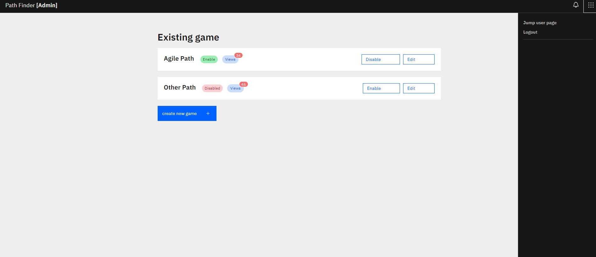
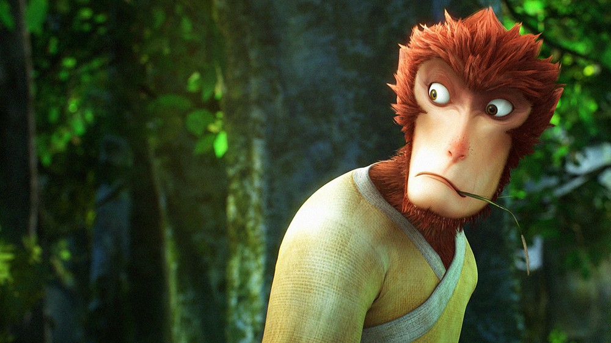
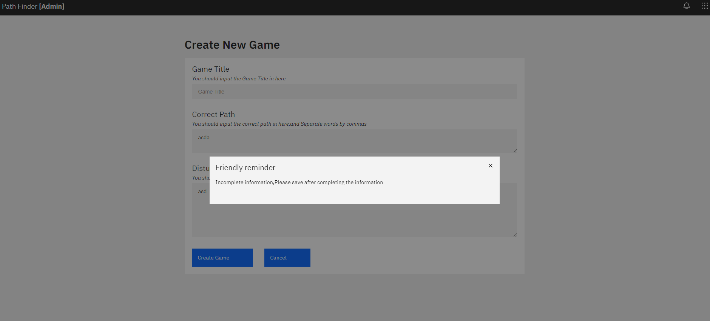
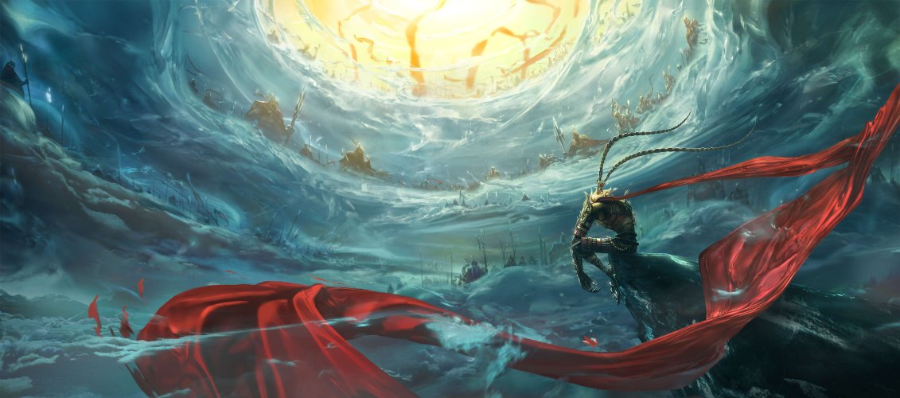
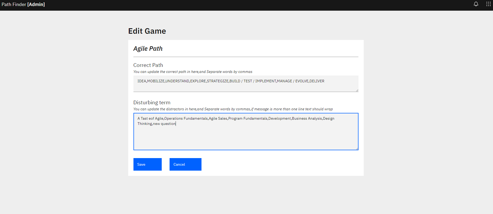
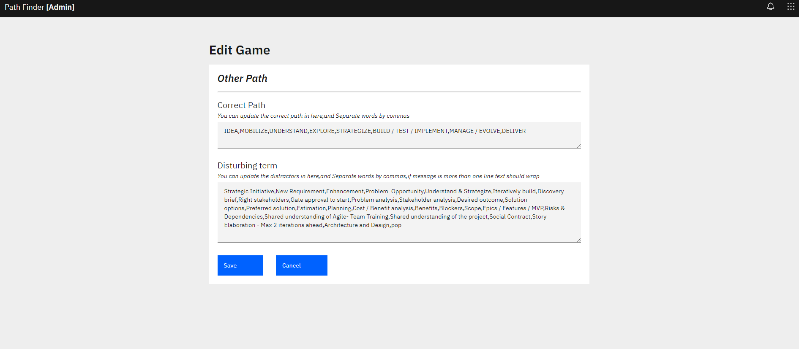
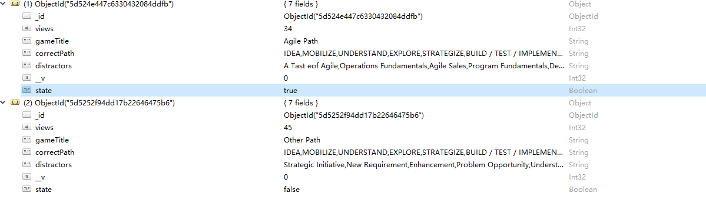

In this page , All existing games will be displayed here.
1. Admin can change the game state by the button. If the game state is active,the button will be 'disable' , click it will change the state as disable. Else,Empathy
2. when admin click 'edit' , it will jump to the edit page
3. when admin click 'create' , it will jump to the page of creating game
4. when admin click 'jump user page', it will jump to the user page , admin can check the game which have created
5. when admin click 'logout', it will logout and back to login page
6. The views is number of Players
In this page , admin can ceate a new game .
1. if you click 'cancel',it will back to the existing game page
2. if you create success , it will back to the existing game page, And The new game will be displayed in the existing game page
1. If one of the input boxes is empty , when you click 'create game', it will eject a modal , Avoid game data missing (See figure below.)
2. If one of the input boxes is not empty , but you click 'cancel' , it wlii eject another modal , In order to Avoid data loss caused by wrong clicks
2.1 If you choose 'stay on this page',it will stay on this page
2.1 If you choose 'confirm to leave',it will leave this page
In this page , admin can edit the existing game
1. When you edit a game, the raw data will be displayed here, and you can modify it.
2. if you click 'cancel',it will back to the existing game page
 Temporary data model
